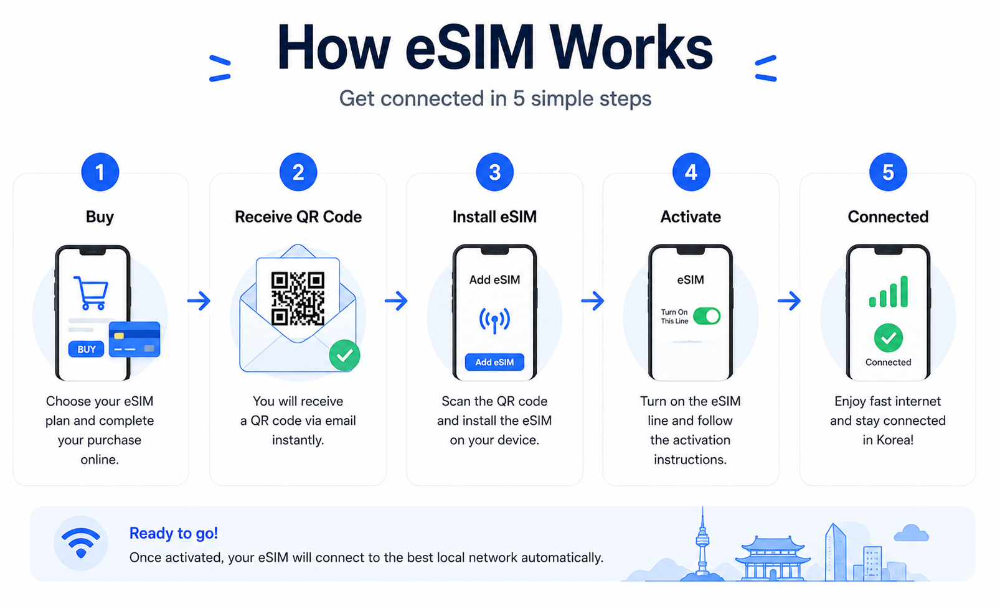
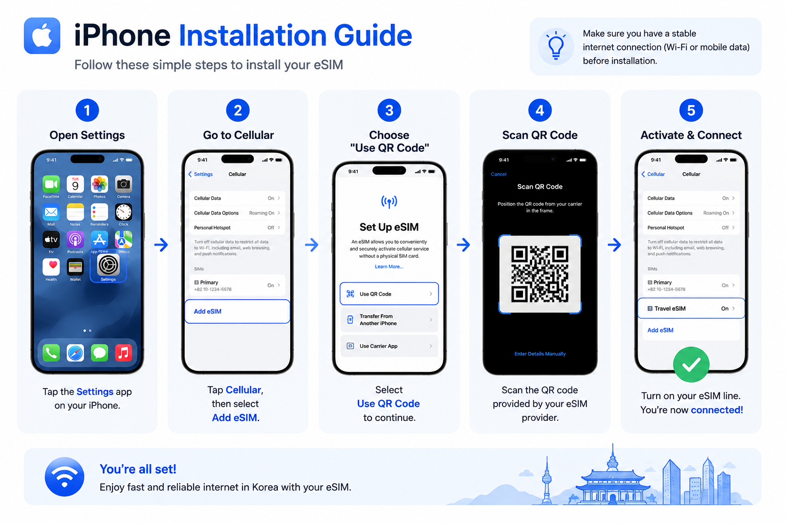
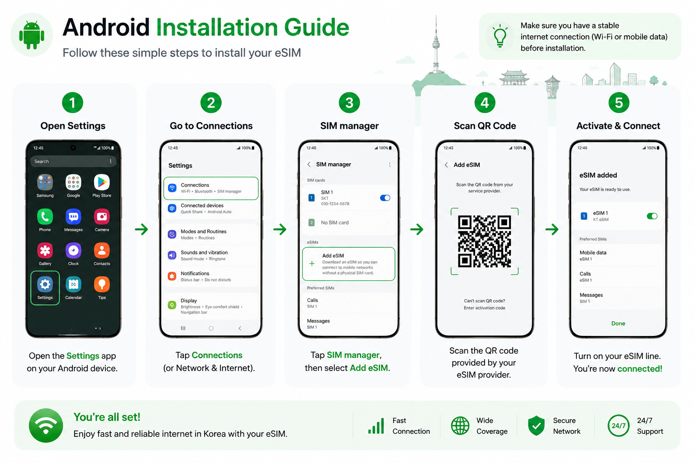
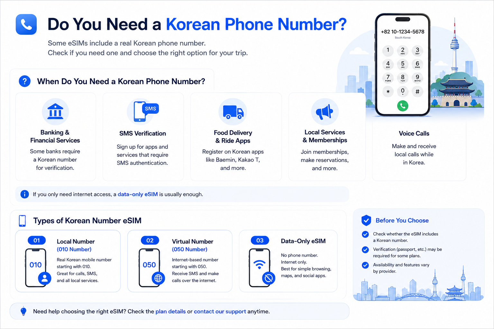
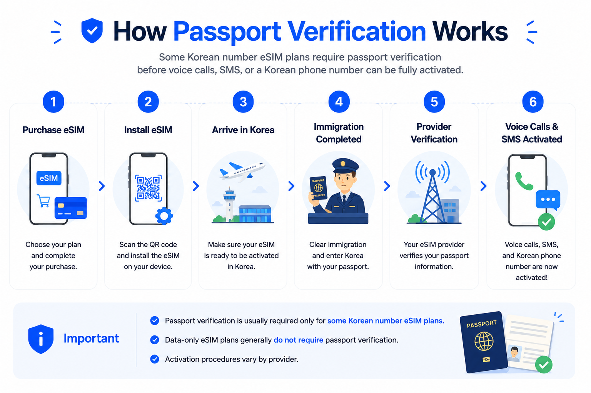
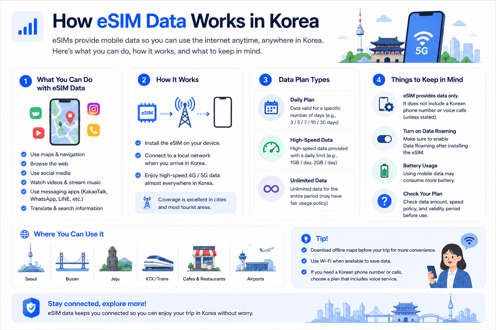

How To Use eSIM In Korea
Choose the right mobile option before arriving in Korea. Use this guide to decide between data-only eSIM, Korean number eSIM, and physical Korea SIM.

Tap image to enlarge
Quick Answer
For most short-term travelers, a data eSIM is enough. Choose a Korean number eSIM or Korea SIM only when you need calls, SMS, delivery-driver contact, reservations, or longer stay support.
Internet only
Use maps, messaging apps, SNS and translation.
- International eSIM is usually easiest
- Often no passport verification
Korean number needed
Useful for local calls, SMS and some services.
- Check Korean eSIM plans
- Passport verification may be required
Longer stay
If you stay longer, compare Korean eSIM and physical SIM.
- Better for local services
- Check activation and refund rules
What is eSIM?
An eSIM is a digital SIM built into your phone. You install a mobile plan by scanning a QR code or entering an activation code instead of inserting a physical SIM card.
Why it helps in Korea
- Prepare internet before landing
- No need to change your physical SIM
- Keep your home SIM active on supported phones
- Use maps, messaging, translation and web search after arrival
Important difference
Not all eSIM plans include the same features. Some are data-only. Some Korean eSIM plans may include a Korean phone number, voice calls and SMS.
How eSIM Works
The image gives a quick visual overview. The actual steps should always follow your provider's instructions.

Tap image to enlarge
Choose a plan online before your trip.
Your provider sends a QR code or activation code.
Add the eSIM to your phone.
Turn on the eSIM line and data roaming if required.
Use mobile data after the plan is active.
Does Your Phone Support eSIM?
Before buying, confirm that your exact model supports eSIM and is unlocked for overseas mobile plans.
iPhone
iPhone XS, XR and later models generally support eSIM.
Samsung Galaxy
Recent Galaxy S, Z Fold and Z Flip models usually support eSIM.
Google Pixel
Most recent Pixel phones support eSIM.
Region models
Some regional or carrier-locked models may not support eSIM.
Install eSIM on iPhone

Tap image to enlarge
- ① Open Settings :Open the Settings app.
- ② Go to Cellular :Tap Cellular or Mobile Data.
- ③ Add eSIM :Select Add eSIM.
- ④ Scan QR Code :Scan the provider QR code.
- ⑤ Activate eSIM :Turn on the eSIM line.
Install eSIM on Android

Tap image to enlarge
- ① Open Settings :Open the Settings app.
- ② Go to Connections :Tap Connections.
- ③ Open SIM Manager :Select Add eSIM.
- ④ Scan QR Code :Scan the provider QR code.
- ⑤ Activate eSIM :Turn on the eSIM line.
Choose the Right Mobile Option for Korea
Compare Global eSIM, Korean eSIM and Korean Physical SIM to find the best option for your trip.
Global eSIM
Usually best for simple mobile data.
- Data Only
- Easy Online Purchase
- Uses Korean mobile networks through roaming or partner agreements
Korean eSIM
Korean carrier-based eSIM plans vary by provider and plan.
- Data Only
- Korean Phone Number + Data
- Passport verification may be required
Korean Physical SIM
Physical SIM option for local phone-number use.
- Physical SIM
- Korean Phone Number + Data
- Best for longer stays or users who need calls and SMS
Global eSIM providers usually use Korean mobile networks through roaming or partner agreements. The main difference is not the network itself, but the services included, such as a Korean phone number, voice calls, SMS, and identity verification requirements.
Data Limits: Global eSIM vs Korean Carrier eSIM
Use this table to understand why some Korean carrier eSIM plans may cost more than global eSIM plans.
| Feature | Global eSIM | Korean Carrier eSIM |
|---|---|---|
| Typical Data Options | Usually fixed data plans such as 1GB, 3GB, 5GB, 10GB, 20GB or 50GB | Often high-data or unlimited-style plans for travelers |
| Unlimited Data | Available from some providers, but check speed limits | Common on some Korean carrier tourist plans |
| Speed Limitation | Depends on the plan and provider | May slow down after a fair usage limit |
| Fair Usage Policy | Common, especially on unlimited plans | Common, especially on unlimited plans |
| Korean Phone Number | Usually not included | Available on some plans |
| Voice Calls | Usually not included | Available on some plans |
| SMS | Usually not included | Available on some plans |
| Best For | Short trips and lower-cost mobile data | Travelers who need more data, a Korean number, voice calls or SMS |
eSIM Providers for Korea
This section helps travelers understand common provider types and what to check before buying.
International eSIM Providers
Usually convenient for short-term travelers who mainly need mobile data.
Most international eSIM providers focus on mobile data. Korean phone numbers, voice calls and SMS depend on the selected plan. They usually connect through Korean mobile networks via roaming or partner agreements.
Korean eSIM / SIM Providers
Korean eSIM or SIM plans may include a Korean phone number, calls and SMS depending on the provider and plan.
SKT
- eSIM available
- Physical SIM available
- Tourist plans available
- Local plans available
LG U+
- eSIM available
- Physical SIM available
- Tourist plans available
- Local plans available
Available services depend on the provider and the specific plan you choose. Some plans include a Korean phone number, voice calls and SMS, while others provide data only.
Do You Need a Korean Phone Number?
Many travelers only need mobile data. A Korean phone number may be useful if you plan to receive delivery driver calls, use SMS verification, make reservations, contact local businesses or stay longer.

Tap image to enlarge
Do You Need a Korean Phone Number?
Use this table to compare when a data-only eSIM is enough and when a Korean phone number may be useful.
| Situation | Data eSIM | Korean Number eSIM |
|---|---|---|
| Navigation Apps | ✅ Good | ✅ Good |
| KakaoTalk / WhatsApp | ✅ Good | ✅ Good |
| Food Delivery | △ Limited | ✅ Easier |
| Restaurant Reservations | △ Limited | ✅ Easier |
| SMS Verification | ❌ Usually not available | △ Plan dependent |
| Local Calls | ❌ Not available | ✅ Available on supported plans |
| Living in Korea | △ Possible | ✅ More convenient |
For most short-term tourists, a data-only eSIM is usually enough. A Korean phone number becomes more useful for delivery apps, reservations, local calls and longer stays.
Passport Verification for Korean Number eSIM
Some Korean number eSIM plans require passport verification before voice calls, SMS or a Korean phone number can be fully activated.

Tap image to enlarge
How eSIM Data Works in Korea
Data-only eSIM is usually enough for maps, messaging, translation, SNS and web browsing.

Tap image to enlarge
Common eSIM Problems
Most issues come from activation timing, wrong SIM line settings, disabled data roaming or provider-specific instructions.
No Service
Restart your phone and check that the eSIM line is turned on.
No Mobile Data
Some providers require Data Roaming ON for the eSIM line.
Calls / SMS Issues
Your plan may be data-only, or passport verification may not be complete.
Frequently Asked Questions
Short answers to common Korea eSIM questions.
What is an eSIM?
An eSIM is a digital SIM that lets you use a mobile data plan without inserting a physical SIM card.
Does my phone support eSIM?
Many recent iPhone, Samsung Galaxy, Google Pixel and other flagship phones support eSIM, but compatibility depends on the exact model and country version.
When should I install my eSIM?
It is usually best to buy and install your eSIM before arriving in Korea, but activate the plan only when you are ready to use it.
Can I keep using my physical SIM?
Yes. In most cases, you can keep your original SIM active and use the eSIM for mobile data in Korea.
Do I need a Korean phone number?
For maps, messaging, translation, browsing and SNS, a data-only eSIM is usually enough. A Korean phone number may help with delivery apps, reservations, local calls and some SMS verification.
Can I use KakaoTalk with a data-only eSIM?
Yes. KakaoTalk can usually be used with mobile data or Wi-Fi. Your existing KakaoTalk account does not normally require a new Korean phone number.
Can I use Google Maps and Naver Map?
Yes. Both Google Maps and Naver Map can work with mobile data. Naver Map is often more useful for local routes inside Korea.
Can I receive SMS verification codes?
It depends on the plan. Data-only eSIM plans usually do not receive SMS. Korean number eSIM or physical SIM plans may support SMS, but Korean identity verification is not always guaranteed.
Can I use hotspot or tethering?
It depends on the provider and plan. Always check hotspot or tethering availability before buying.
How much data do I need in Korea?
Light users may need about 1–2GB per day. Heavy users using maps, video, SNS, translation and hotspot may need more.
Can I use Baemin with a data-only eSIM?
Baemin and other Korean delivery services may require a Korean phone number or local verification. A data-only eSIM may not be enough.
Will my WhatsApp number change?
No. Your WhatsApp account usually stays linked to your original phone number, even when you use a Korean eSIM for data.
Is eSIM better than a physical SIM in Korea?
eSIM is convenient for short trips and quick setup. A physical SIM may be better if you need a Korean phone number, voice calls, SMS or longer-term use.
What happens if I run out of data?
Some providers allow top-up or additional data purchase. Check the provider’s recharge policy before buying.
Can I delete and reinstall my eSIM?
Not always. Some eSIMs cannot be reinstalled after deletion. Do not delete your eSIM unless the provider clearly says it can be reinstalled.
Still Not Sure Which eSIM to Choose?
Compare Global eSIM, Korean eSIM and Physical SIM above to find the best option for your trip. You can also visit the official provider websites for the latest plans, pricing and compatibility information.
Recommended Next Guides
After mobile connection, check airport arrival, transport, payment and navigation basics.